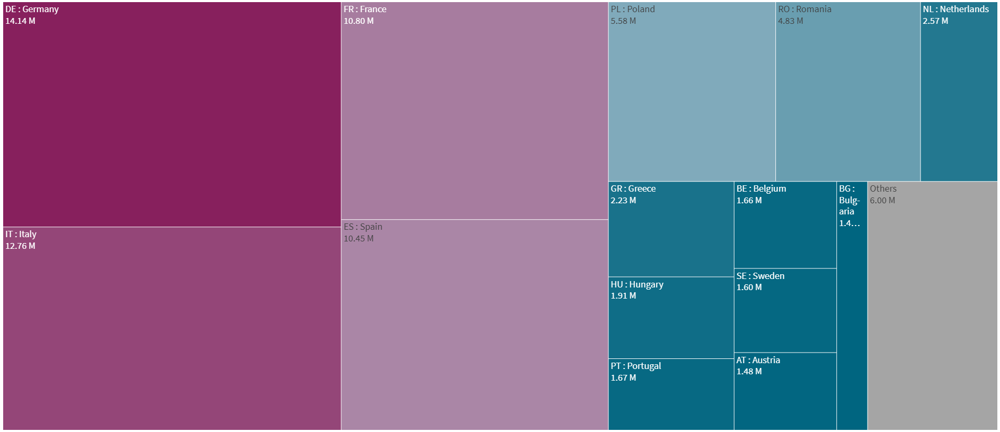

EU27 Overview
Share of Population under Poverty line
⇩
Chart description:
Choropleth Europe map showing the prevalence of poverty (share of population) in EU27 Member States.Clicking the play button will show the evolution along the years from 2000 until 2021.
Change of % Population under Poverty line from 2000 onwards
⇩
Chart description:
RaceBar Chart showing the evolution of poverty prevalence (share of population) in EU27 Member States along the Years from 2000 until 2021.
Share of Female vs. Male Population in Poverty
⇩
Chart description:
Lollipop Chart comparing Share of poverty in Female population vs Male Population.Cross sectional data for Year 2021.
Contribution of each Country to the Total Nr. of people living under the Proverty Line
⇩
Year: 2021
Chart description:
TreeMap chart showing the contribution of each country to the total EU27 Head Count living under the poverty line.Cross sectional data for Year 2021.